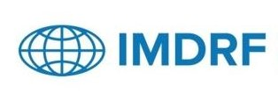
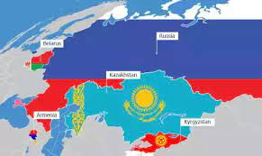
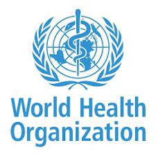
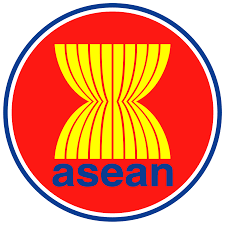

Defination:MDSAP aims to develop a global approach to auditing and monitoring the manufacturing of medical devices
Country Assosciated:
Australia
Brazil
Canada
Japan
USA
These nations work together to identify and acknowledge MDSAP audit findings as proof of regulatory compliance.
Established Year: 2014
Member:
Therapeutic Goods Administration of Australia.
Brazil's Agência Nacional de Vigilância Sanitária.
Health Canada.
Japan's Ministry of Health, Labour and Welfare, and the Japanese Pharmaceuticals and Medical Devices Agency.
U.S. Food and Drug Administration.
Function : The MDSAP allows recognised Auditing Organizations to audit medical device manufacturers in a single program that satisfies the requirements of the participating regulatory authorities
Advantage:
It streamlines compliance for manufacturers by implementing a single audit that meets multiple regulatory criteria, enhancing operational efficiency.
This eliminates the need for separate audits in participating countries, reducing duplication of efforts.
Harmonizing audit processes improves regulatory adherence assessment, ensuring consistency and effectiveness in compliance evaluations.
Provides easy registration process and entry to multople markets.
Reduces the overall Audit cost and audit time.
MDSAP certificates can be merged with ISO 13485 or CE mark.
Certification :
An MDSAP certificate is granted to manufacturers who have satisfactorily completed the audit, serving as evidence of their adherence to the regulatory requirements.
In those countries, the regulatory authorities recognize this certification.
MDSAP certificate is valid for 3 years
IMDRF

Defination:IMDRF is a voluntary group of medical device regulators from around the world that aims to accelerate international regulatory harmonization and convergence for medical devices
Country Assosciated:
Australia (represented by the Therapeutic Goods Administration - TGA)
Brazil (represented by the Brazilian Health Regulatory Agency - ANVISA)
Canada (represented by Health Canada)
China (represented by the National Medical Products Administration - NMPA)
European Union (represented by the European Commission's Directorate-General for Health and Food Safety)
Japan (represented by the Pharmaceuticals and Medical Devices Agency - PMDA, and the Ministry of Health, Labour and Welfare - MHLW)
Singapore (represented by the Health Sciences Authority - HSA)
South Korea (represented by the Ministry of Food and Drug Safety - MFDS)
United Kingdom (represented by the Medicines and Healthcare products Regulatory Agency - MHRA)
United States of America (represented by the U.S. Food and Drug Administration - FDA)
Established Year: 2011
Function:
The IMDRF maintains working relationships with other international entities and regional organizations to foster global convergence.
IMDRF aims to promote high standards for safe and performant medical devices globally.
IMDRF develops and publishes various documents to support regulatory harmonization
Advantage :
Develops harmonized standards and guidance documents
Promotes international regulatory convergence and harmonization
Enables efficient and effective regulatory model
Facilitates global electronic submissions
Promotes collaboration and knowledge sharing
Additional Information :
Global Harmonization Task Force (GHTF) was started in 1992 to achieve greater uniformity between national medical device regulatory systems and GHTF was repIaced by IMDRF in 2011
EAEU

Defination:EAEU is a regional economic union of former Soviet states seeking deeper integration through a single market, coordinated economic policies, and supranational governing institutions, modeled after the European Union
Country Assosciated:
The EAEU currently consists of five member states - Russia, Kazakhstan, Belarus, Armenia, and Kyrgyzstan
Established Year: 1/1/2022
Function : The MDSAP allows recognised Auditing Organizations to audit medical device manufacturers in a single program that satisfies the requirements of the participating regulatory authorities
Advantage:
The central law governing medical devices in the EAEU is the "Agreement on Common Principles and Rules for the Circulation of Medical Products (Medical Devices and Medical Equipment)"
This agreement aims to harmonize regulations and create a common market for medical devices within the EAEU.
Foreign manufacturers are required to appoint a local Authorized Representative (AR) within the EAEU.
AR acts as a liaison with the competent authorities and manages submissions and post-market activities
Advantage :
Harmonized regulatory framework across member states
Single registration for multiple markets
Potential for faster market access
Improved regulatory transparency
Aditional Information :
Potential candidates like Uzbekistan and Iran have shown interest but have not joined yet, citing concerns over trade limitations and economic readiness
WHO

Defination: WHO is a specialized agency of the United Nations responsible for international public health
Country Assosciated:
The WHO has 194 member states as of January 2021 these include all member states of the United Nations except Liechtenstein, the Cook Islands and Niue.
Established Year: April 7, 1948 is celebrated annually as World Health Day, marking the establishment of the WHO
Function :
WHO develops evidence-based norms, standards, guidelines, and tools to support countries in addressing public health issues and promoting health.
WHO offers technical assistance and builds sustainable institutional capacity in countries to prevent public health threats
WHO influences the global health research agenda and stimulates the generation, translation, and dissemination of valuable knowledge
WHO monitors and assesses global health trends, collects data on health issues, and provides authoritative information and evidence
WHO coordinates and leads global efforts to prevent, detect, and respond to disease outbreaks and health emergencies
WHO sets ethical standards and promotes the integration of ethical considerations into health policies and programs.
Advantage:
WHO provides Global authority and leadership.
WHO has a worldwide presence and can mobilize global action on health issues
WHO's norms, standards, and guidelines serve as a reference for countries, promoting harmonization and best practices
WHO facilitates coordination and partnerships among countries, organizations, and stakeholders,
Aditional Information :
Approximately 7000 people are working in 150 country offices and its Headquarters is located in Geneva, Switzerland
ASEAN

Defination:AMDD aims to facilitate trade and market access of medical devices in the ASEAN region by reducing technical barriers through harmonization of regulations, common documentation requirements, and implementation progress
Country Assosciated: Brunei, Cambodia, Indonesia, Laos, Malaysia, Myanmar, Philippines, Singapore, Thailand, and Vietnam
Established Year: 8/8/1967
Function :
The AMDD classifies medical devices into four risk classes - Class A, B, C, and D, with risk levels increasing from A to D
It provides guidelines on conformity assessment procedures, QMS, PMS, adverse event reporting, and other regulatory requirements for each device class
The AMDD requires manufacturers to demonstrate conformity to Essential Principles of Safety and Performance (EPSP) through technical documentation,
It establishes a Common Submission Dossier Template (CSDT) for product approval, including labeling, packaging materials, and instructions
The ASEAN Medical Device Committee (AMDC) was formed in 2014 to coordinate the implementation of the AMDD and work towards regulatory convergence across ASEAN countries
Advantage:
AMDD aims to create a harmonized regulatory framework for medical devices within the ASEAN region
The AMDD provides a more transparent and standardized regulatory framework, making it easier for manufacturers to understand and comply with the requirements across ASEAN countries
By reducing the need for separate registrations and submissions in each ASEAN country, the harmonized AMDD framework can potentially lead to cost savings for manufacturers.
The AMDD is part of the broader ASEAN Economic Community (AEC) initiative, which aims to liberalize intra-regional trade and investment.